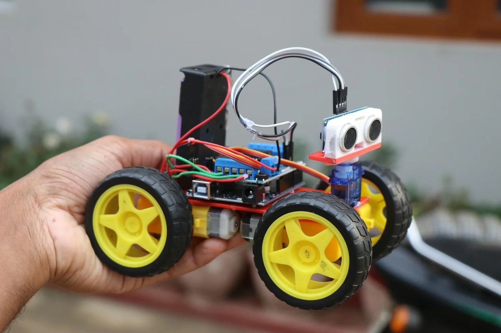
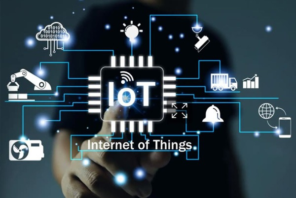
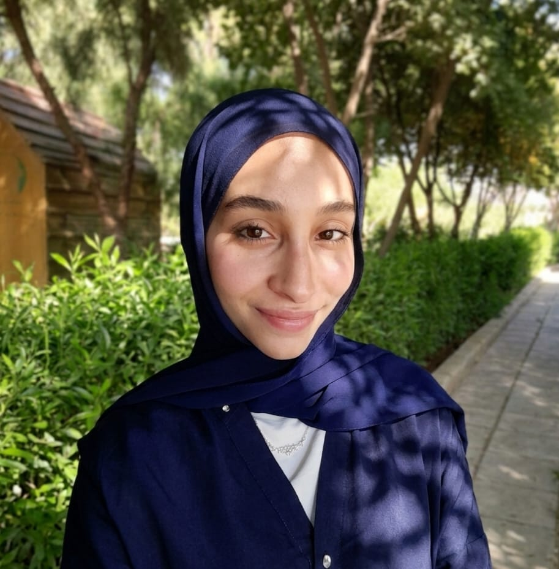

IEEE RAS BAU
نبتكر، نتعلم، ونقود التغيير التكنولوجي من خلال الفعاليات والورشات المتقدمة.
+40
أعضاء مشاركين
الأقسام الرئيسية
Mechanics Team
Electrical Team
Programming Team
الأقسام الفرعية
Social Media Team
Public Relations Team
×

IEEE RAS BAU
Programming Team
تيم البرمجة
نكتب الأكواد البرمجية لنفخ الروح في النظام والتحكم به باستخدام لغات مثل C++ و Python لتطوير الخوارزميات والتحكم بالحساسات والمحركات ومعالجة البيانات بشكل ذكي.
مجال اهتمامنا
نركز في جهودنا على تمكين الطلاب وتطوير مهاراتهم في قطاعات التكنولوجيا المتقدمة

الروبوتات
تصميم، بناء، وبرمجة الأنظمة الروبوتية المختلفة ومشاركتها في المسابقات التنافسية

الذكاء الاصطناعي
تطبيق خوارزميات التعلم الآلي والرؤية الحاسوبية والبرمجة

الأنظمة المدمجة
التعامل مع المتحكمات الدقيقة مثل Arduino وESP32.

انترنت الاشياء
ربط المستشعرات والأنظمة الفيزيائية بالشبكة السحابية وتطوير حلول ذكية ومتكاملة
IEEE RAS BAU

Social Media Team
تيم السوشيال ميديا
نصنع المحتوى البصري والكتابي وننشر إنجازات الفريق للعالم من خلال إدارة الحسابات الرسمية، كتابة المنشورات، وتصميم الصور ومقاطع الفيديو التفاعلية المواكبة للأحداث.